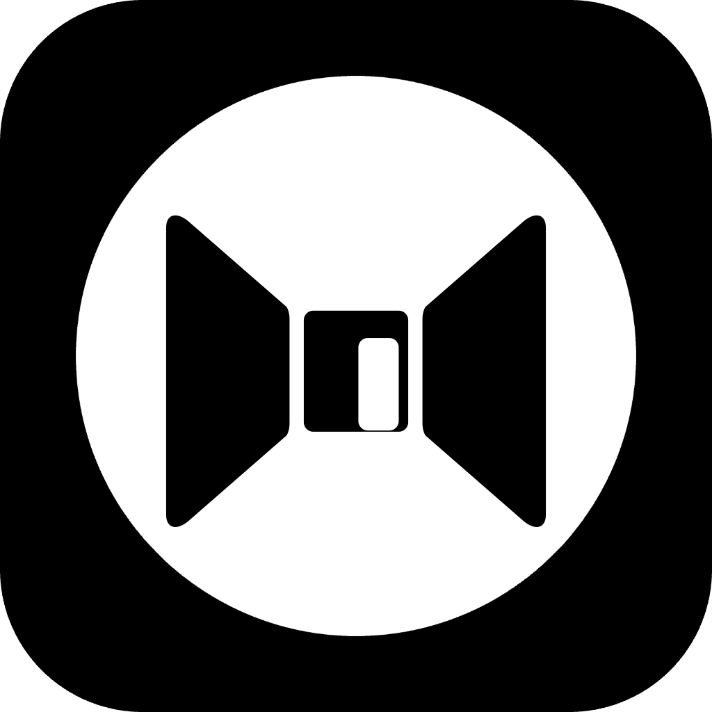

Beyond Digital Detox: Noise-canceling apps for your mind
Every day, smartphones, social media, notifications, news, advertisements and other people's opinions compete for your attention.
But even when you put your phone away, the competition doesn't necessarily stop.
The noise comes from both outside and inside your mind.
Turning off your screen doesn't necessarily turn off the thoughts that keep running in the background.
MINDBEBOP is a family of small, practical apps designed to help you deal with these everyday situations.
Not by telling you what to think, but by giving you different ways to interact with your thoughts and attention.
You don't need to use every MINDBEBOP app. Start with something you recognize in your own life.
You open social media, close it, and open it again. Sometimes you don't even know what you're looking for. You simply feel the urge to check.
What you can do:
Create a temporary boundary between yourself and the apps that keep pulling your attention back.
Give yourself some time away from them.

App Blocker for Your Mind.
Temporarily block selected apps and give your attention room to move elsewhere.
There's always something new to read, watch, listen to or respond to. Even during a break, you find yourself taking in more information.
What you can do:
Stop adding new information for a while.
Give your existing thoughts some time and space without constantly introducing new ones.
An Offline Space for Your Mind.
Step away from incoming information and let your thoughts reach their natural endpoints.
Something someone said. Something that went wrong. Something you're afraid might happen. The same thought keeps returning, even when you want to think about something else.
What you can do:
Give the thought another perspective.
You don't have to deny what happened or pretend everything is fine.
You can explore another way of looking at it.
Thought-Flipping Notepad.
Create a lighter response to a heavy thought or look at it from another perspective.
Something you need to do tomorrow. Something you want to tell someone. Something you want to think about later. You don't need to deal with it now, but you don't want to forget it.
What you can do:
Give that thought another time to return instead of repeatedly reminding yourself about it.
Thought-Offloading Notepad.
Give a thought another time to return as a reminder.
Work, family, money, health, unfinished tasks, new ideas, future plans and things you're worried about. They can all exist in your mind at the same time, competing for your attention.
Your home has shelves, drawers, rooms and furniture. You can give things their own place instead of carrying everything around with you.
What about your thoughts?
What you can do:
Give your thoughts a place in a spatial environment.
Organize your tasks and projects, group related thoughts, explore ideas, change your perspective or simply leave something where it is.
Thought Block Playground.
Turn thoughts into Thought Blocks in a three-dimensional Thought Space.
Move them, organize them, explore them or work with them through Thought Furniture.
A Thought Block can represent a task, a project, an idea, a concern, a memory or anything else on your mind. You can also connect it to Mental Steps when you want to do something with it.
Something can remain important without requiring your attention right now.
You want to start working. You want to stop scrolling. You want to leave work behind and enjoy your evening. You want to move on from something.
Knowing what you want doesn't always mean you know how to get there. And knowing what to do isn't always enough to get started.
What you can do:
Choose where you want your mind to be and move toward it through small, manageable steps.
You don't have to figure out the entire journey at once.
GPS for Your Mind.
Move through Mental Steps toward your Mental Destination (Point B).
Your Mental Destination doesn't have to be a task. It can be a decision, a change of direction, a different state of mind or something you want to do in the real world.
You choose your destination. The route can change along the way.
You don't always need to concentrate harder.
You don't always need to get something done.
You don't always need to solve a problem, answer a question or improve yourself.
Sometimes you want to pursue something.
Sometimes you want to put something aside.
Sometimes you just want to sit.
MINDBEBOP is not about maximizing your attention or making every moment productive. It offers different ways to interact with your thoughts without deciding what you should think or what deserves your attention.
Your attention is yours to use — or not use.
Many digital products are designed to keep you engaged. More time spent, more things viewed, more reasons to come back.
MINDBEBOP takes a different approach.
Open an app when you need it.
Use it for as long as it is useful.
Close it when you're ready.
If thirty seconds with a MINDBEBOP tool is all you need, that's perfectly fine. If you want to spend an hour exploring your thoughts in MindBackyard or simply sitting with MindZoneOut, that's fine too.
The point is not to spend more time with MINDBEBOP. The point is to get back to your life.
MINDBEBOP tools can help in three broad ways.
Reduce
Reduce what keeps asking for your attention.
Give thoughts another perspective, another time or another place.
Create distance from distractions when you need it.
Navigate
Move from where you are now toward somewhere you want to be, through
Mental Steps.
Anchor
When you arrive somewhere meaningful,
MindAnchor
lets you preserve something from that arrival.
These are possibilities, not required stages. A thought may only need one of them. Or none at all.
Digital Detox is about stepping away from digital devices and the information they bring into your life.
But what about the thoughts that remain active after you turn off your screen?
MINDBEBOP calls its approach to reducing mental noise and friction Mental Background Detox.
It doesn't necessarily mean getting rid of thoughts. It means having different ways to interact with them.
A thought may need less attention.
It may need another perspective.
It may need another time.
It may need somewhere to exist.
Or you may decide there is somewhere you want to go.
The apps and concepts behind this approach are connected through an architecture called Mental Background OS.
MINDBEBOP is not a diagnostic tool or a form of therapy. It is a family of everyday tools for interacting with your thoughts and attention.
MINDBEBOP
Noise-canceling apps for your mind.
Reduce mental noise and friction.
Give thoughts somewhere to exist.
Navigate when you want to go somewhere.
Anchor something worth remembering.
Copyright © 2026 MINDBEBOP — All rights reserved.